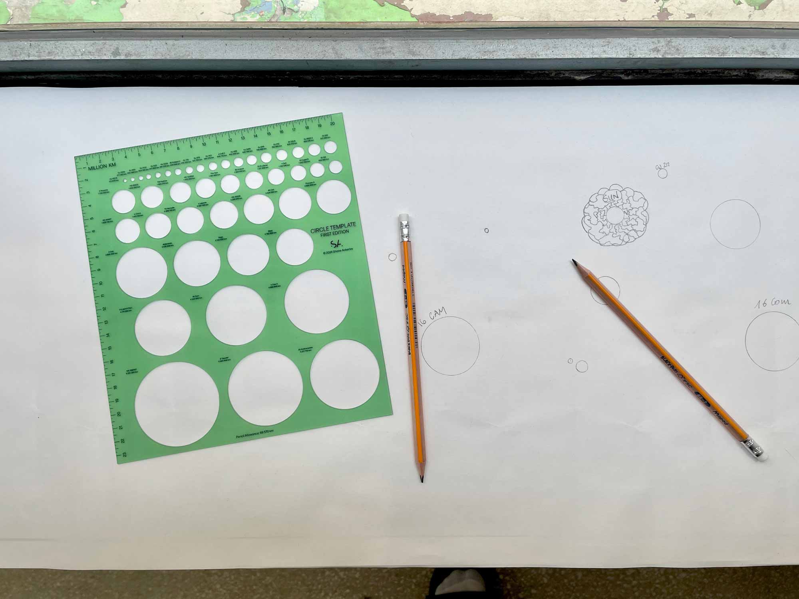

Circle Template
2024
19 x 21.5 cm
Edition of 10 plastic stencils
Draw me a star. Is it a symbol? An object? A place?
Circle Template is a reproduction of a classic green stencil. Whereas the original gave measurements in inches, mine spans more than twenty million kilometres. Each circle corresponds to a real star, allowing the user to draw them accurately and to scale (109,559,000,000 times smaller than reality). Above and to the left of each circle is a label giving the star's name and its diameter in real kilometres. The Sun, our nearest star and the one to which we are gravitationally bound, is in the second row, fifth in from the left.
I find it hard to remember the feeling of looking at the night sky when I was a child. I know it was wonderful—it must have been, since whatever I saw then ultimately inspired me to study astrophysics. When I see the stars now, I think about the distance, the mass, the immense energy that there must be in each piercing bright point. I wonder how much time a star has spent burning. I worry about how much fuel it has left. The magic endures—I still feel awe—but my mind is cluttered. What once were feelings are now quantities. What were dreams are now scientific models. Instead of drawing five-pointed stars, now I draw circles.
